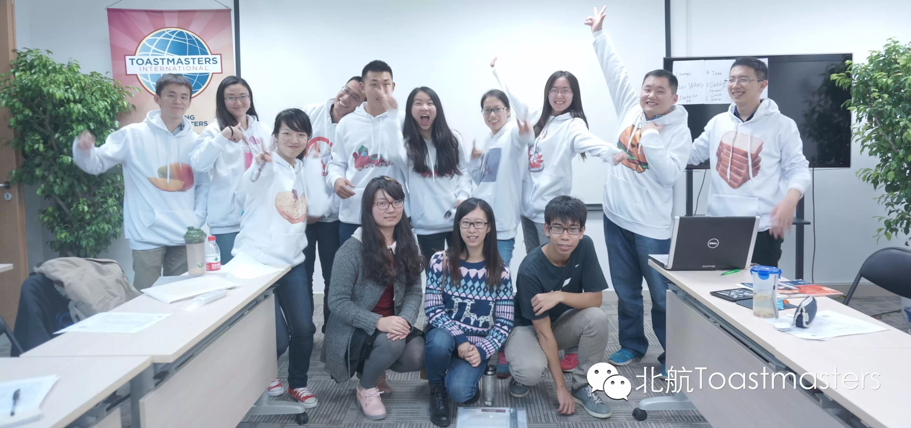

About Beihang Toastmasters

北航自己的英语演讲俱乐部，
欢迎各位同学，来这里交朋友\练口语，更重要的是，
很多年前，《时代周刊》曾做过这样一个调查：
让人选择十项最害怕的事物，排名第二的是面对死亡， 高居榜首的你猜猜是什么？
答案是：Public Speaking 公众演讲
如何从容地面对几十上百人，控制紧张情绪？
如何组织大脑中的想法并合理地表达出来？
如何通过适当的肢体语言和眼神交流与听众互动？
如何通过语调的变化来感染听众？
以上种种都是我们要解决的问题。
在这里，你不必担心说得不好，有专业的Evaluator，
我们为你提供一个舞台，你所要做的，只是在TableTopic环节中举手上台。
我们有一整套的演讲方案，教你如何准备演讲。
关上电脑，走出实验室，冲出自己的心理舒适区，
May you——
Be the change youwish to see in the world!

Here is the two-dimension code of ourWeChat Subscription.
欢迎关注微信公众平台：北航Toastmasters

原文链接（公众号关闭后可能失效）：
https://mp.weixin.qq.com/s/kbVSo7Rm1oHbJeCsLviFww
https://mp.weixin.qq.com/s/kbVSo7Rm1oHbJeCsLviFww
第 95/539 篇 · 北航Toastmasters英文演讲俱乐部公众号存档
本页为抢救式本地归档，图文已永久保存。
本页为抢救式本地归档，图文已永久保存。